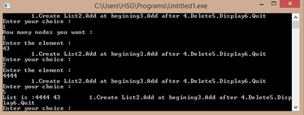

/*C Program to implement circular linked list*/
#include<stdio.h>
#include<malloc.h>
struct node
{
int info;
struct node *link;
}*last;
main()
{
int choice,n,m,po,i;
last=NULL;
while(1)
{
printf("\t1.Create List
");
printf("2.Add at begining");
printf("3.Add after ");
printf("4.Delete");
printf("5.Display");
printf("6.Quit");
printf("\nEnter your choice : \n");
scanf("%d",&choice);
switch(choice)
{
case 1:
printf("How many nodes you want : \n");
scanf("%d",&n);
for(i=0; i < n;i++){
printf("Enter the element : \n");
scanf("%d",&m);
create_list(m);
}
break;
case 2:
printf("Enter the element : \n");
scanf("%d",&m);
add_at_beg(m);
break;
case 3:
printf("Enter the element : \n");
scanf("%d",&m);
printf("enter the position after which
this element is inserted : \n");
scanf("%d",&po);
add_at_end(m,po);
break;
case 4:
if(last == NULL){
printf("List underflow
");
continue;
}
printf("Enter the number for deletion : \n");
scanf("%d",&m);
del(m);
break;
case 5:
display();
break;
case 6:
exit(0);
default:
printf("Wrong choice
");
}/*End of switch*/
}/*End of while*/
}/*End of main()*/
create_list(int num)
{
struct node *q,*temp;
temp= malloc(sizeof(struct node));
temp->info = num;
if(last == NULL)
{
last = temp;
temp->link = last;
}
else
{
temp->link = last->link;
/*added at the end of list*/
last->link = temp;
last = temp;
}
}/*End of create_list()*/
add_at_beg(int num)
{
struct node *temp;
temp = malloc(sizeof(struct node));
temp->info = num;
temp->link = last->link;
last->link = temp;
}/*End of add_at_beg()*/
add_at_end(int num,int pos)
{
struct node *temp,*q;
int i;
q = last->link;
for(i=0;
i < pos-1;
i++)
{
q = q->link;
if(q == last->link)
{
printf("There are less than %d elements",pos);
return;
}
}/*End of for*/
temp = malloc(sizeof(struct node) );
temp->link = q->link;
temp->info = num;
q->link = temp;
if(q==last) /*Element inserted at the end*/
last=temp;
}
/*End of add_at_end()*/
del(int num)
{
struct node *temp,*q;
if( last->link == last && last->info == num)
/*Only one element*/
{
temp = last;
last = NULL;
free(temp);
return;
}
q = last->link;
if(q->info == num)
{
temp = q;
last->link = q->link;
free(temp);
return;
}
while(q->link != last)
{
if(q->link->info == num) /*Element deleted in between*/
{
temp = q->link;
q->link = temp->link;
free(temp);
printf("%d deleted
",num);
return;
}
q = q->link;
}/*End of while*/
if(q->link->info == num)
/*Last element deleted q->link=last*/
{
temp = q->link;
q->link = last->link;
free(temp);
last = q;
return;
}
printf("Element %d not found
",num);
}/*End of del()*/
display()
{
struct node *q;
if(last == NULL)
{
printf("List is empty
");
return;
}
q = last->link;
printf("List is :
");
while(q != last)
{
printf("%d ", q->info);
q = q->link;
}
printf("%d
",last->info);
}/*End of display()*/
